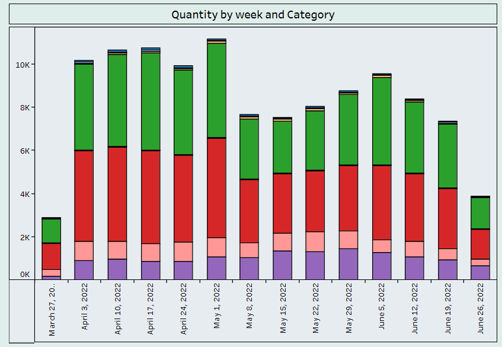
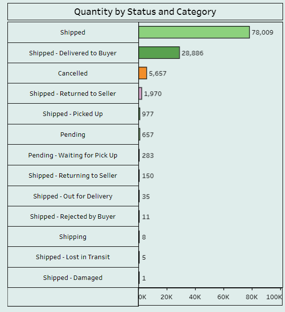
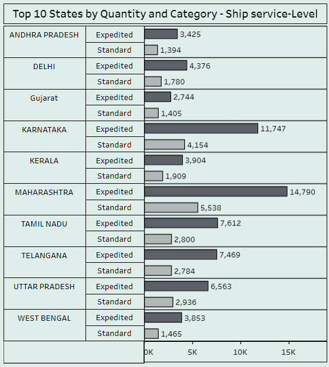
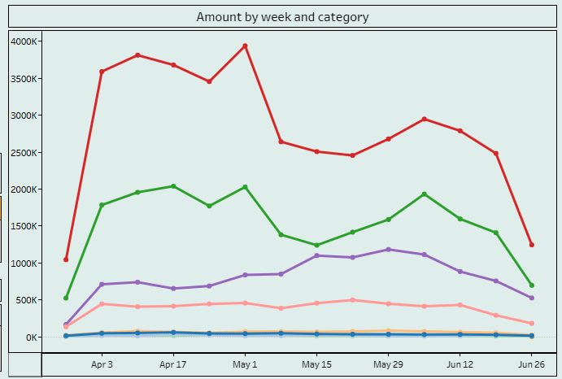

I created an Amazon sales dashboard using Tableau that is designed to help us understand how our sales are trending over time and which products are driving the most revenue. The data for the dashboard comes directly from our Amazon sales database and is updated daily. The dashboard includes several visualizations that are designed to help us understand different aspects of our sales performance. The primary visualization is a line chart that shows sales by week over the past three months. This chart allows us to see how our sales are changing over time and identify any trends or patterns. We're also using a stacked bar chart to show sales by product category. This chart allows us to see which product categories are driving the most revenue and how that revenue is distributed across different categories. The key metrics displayed in the dashboard are total sales, sales by week, and sales by product category. These metrics are important because they help us understand how our sales are changing over time and which products are driving the most revenue. Users can interact with the dashboard by filtering the data by date range or product category. They can also hover over data points to see more details. The dashboard is designed for executives who need a high-level view of sales performance, as well as for sales managers who need to drill down into specific product categories. By using the dashboard, we can gain several key insights into our sales performance. For example, we can see that sales have been trending upward over the past month and that our top-performing product categories are electronics and home goods. This information can be used to make decisions about inventory and marketing campaigns. Overall, the dashboard provides a valuable tool for monitoring our Amazon sales and making data-driven decisions.
An Amazon sales dataset refers to a collection of data related to the sales of products on Amazon's online marketplace. This dataset typically contains a wealth of information related to the products, sales, and customers on the platform, which can be used for various analyses and insights.
The "Quantity by week and Category" sheet in the dashboard provides a detailed breakdown of the quantity of products sold by week and product category. This sheet is useful for identifying which product categories are performing well or poorly, as well as how sales trends are changing over time. The sheet is designed to be interactive, allowing users to filter the data by week or product category. This enables users to quickly drill down into specific time periods or product categories to gain deeper insights into sales performance. The sheet includes several visualizations, including a stacked bar chart and a line chart. The stacked bar chart shows the breakdown of sales by product category for each week, allowing users to quickly identify which categories are driving the most sales. The line chart shows the trend in quantity sold over time, allowing users to see how sales are changing week over week.


The "Quantity by Status and Category" sheet in the dashboard provides a breakdown of the quantity of products sold by order status and product category. This sheet is useful for identifying which product categories are driving the most sales for different order statuses, such as shipped, pending, or cancelled. The sheet is designed to be interactive, allowing users to filter the data by product category or order status. This enables users to quickly drill down into specific categories or order statuses to gain deeper insights into sales performance.
The "Quantity by Top 10 States by Quantity and Category - Ship service-Level" sheet in the dashboard provides a breakdown of the quantity of products sold by top 10 states, product category, and shipping service level. This sheet is useful for identifying which states are driving the most sales, which categories are most popular in those states, and which shipping service levels are preferred by customers in those states. The sheet is designed to be interactive, allowing users to filter the data by product category, shipping service level, or specific states. This enables users to quickly drill down into specific categories, shipping service levels or states to gain deeper insights into sales performance. The sheet includes several visualizations, including a map, stacked bar chart, and tree map. The map shows the total quantity of products sold in each state, allowing users to quickly identify which states are driving the most sales. The stacked bar chart shows the breakdown of sales by product category and shipping service level for each state, allowing users to identify which categories and shipping service levels are driving sales in specific states. The tree map provides an overview of sales performance by category and state, allowing users to easily compare sales across categories and states.


The "Amount by Week and Category" sheet in the dashboard provides a breakdown of the amount of revenue generated by product category and week. This sheet is useful for identifying which product categories are driving the most revenue and how revenue is changing over time. The sheet is designed to be interactive, allowing users to filter the data by product category or week. This enables users to quickly drill down into specific categories or weeks to gain deeper insights into revenue performance. The sheet includes several visualizations, including a line chart and a stacked bar chart. The line chart shows the trend in revenue over time, allowing users to identify any patterns or trends in revenue growth or decline. The stacked bar chart shows the breakdown of revenue by product category and week, allowing users to identify which categories are driving the most revenue and how revenue is distributed across different weeks.